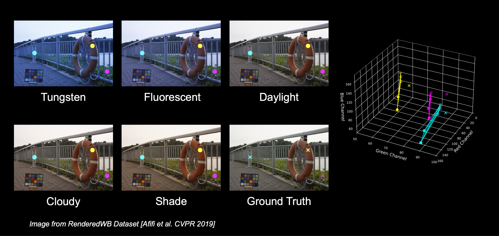

Auto White Balance (AWB) plays a crucial role in rendering accurate colors in photographs. Most AWB modules assume a single dominant light source in the scene. However, real-world environments often contain mixed lighting conditions, and applying single-illuminant AWB to such scenes typically leads to unsatisfactory results.
Afifi et al. proposed rendering the RAW image with a set of fixed WB settings and linearly blending to correct multiple illuminants in an image.
But is linear blending truly the best way to combine different WB settings for multi-illuminant white-balance correction? Our analysis shows that white-balanced pixels often fall outside the convex hull formed by the presets in sRGB space. For example, selecting just three pixels from an image rendered with five WB presets reveals that their true white-balanced values can't be recovered through any linear combination of the presets as they lie beyond the space those presets span. This highlights a fundamental limitation of linear blending. See the paper for a deeper analysis.
To address this limitation, we propose a simple and efficient non-linear approach to blend five WB presets and generate the final white-balanced image. Specifically, we first concatenate the presets and project them using a 3×3 convolutional layer, followed by a Transformer block and an unprojection layer to produce the output image. To enhance efficiency, the Transformer operates in feature space and computes attention in a channel-wise manner. Our model contains only 7.9K parameters and achieves an inference time of under 200 milliseconds.
To improve performance, we propose a simple and efficient non-linear approach to blend five WB presets and generate the final white-balanced image. Specifically, we first concatenate the presets and project them using a 3×3 convolutional layer, followed by a Transformer block and an unprojection layer to produce the output image. To enhance efficiency, the Transformer operates in feature space and computes attention in a channel-wise manner. Our model contains only 7.9K parameters and achieves an inference time of under 200 milliseconds.
All fusion-based multi-illuminant white balance methods rely on single-illuminant datasets for both training and evaluation. The only available multi-illuminant benchmark is a synthetic test set comprising just 30 scenes. To address this gap, we repurpose the LSMI dataset, which provides RAW images of the same scene captured under one, two, and even three different light sources.
To construct our benchmark, we first compute the white-balanced version of the single-illuminant image using color checker references. Next, we apply AWB to the multi-illuminant image. Finally, we adjust the per-pixel brightness of the single-illuminant white-balanced image with the AWB-corrected multi-illuminant image.
Our method achieves state-of-the-art performance across all three splits of our dataset. Additionally, we evaluate all methods in a cross-camera setting to assess generalization to unseen cameras, using both the synthetic test set and a single-illuminant setup. Our method consistently outperforms others in terms of ΔE2000, MSE, and MAE. See the paper for more details and qualitative results.
DSL, LH, and JVC were supported by Grant PID2021-128178OB-I00 funded by MCIN/AEI/10.13039/ 501100011033 and by ERDF "A way of making Europe", and by the Generalitat de Catalunya CERCA Program. DSL also acknowledges the FPI grant from the Spanish Ministry of Science and Innovation (PRE2022-101525). LH was also supported by the Ramon y Cajal grant RYC2019-027020-I. This work was also partially supported by the grant Càtedra ENIA UAB-Cruïlla (TSI-100929-2023-2) from the Ministry of Economic Affairs and Digital Transition of Spain. This work was funded in part by the CFREF (VISTA) program, an NSERC Discovery Grant, and the Canada Research Chair program.
@inproceedings{revisitingmiwb2025,
title={PromptNorm: Image Geometry Guides Ambient Light Normalization},
author={Serrano-Lozano, David and Arora, Aditya and Herranz, Luis and Derpanis, Konstantinos G. and Brown, Michael S. and Vazquez-Corral, Javier},
booktitle={International Conference in Computer Vision},
year={2025}
}